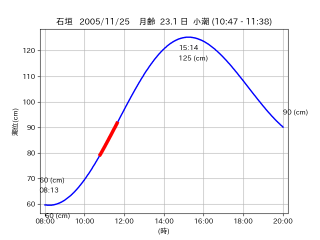
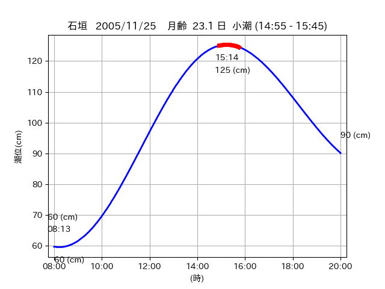

<!DOCTYPE html>
<html>
<head>
    
    <meta http-equiv="content-type" content="text/html; charset=UTF-8" />
    
        <script>
            L_NO_TOUCH = false;
            L_DISABLE_3D = false;
        </script>
    
    <style>html, body {width: 100%;height: 100%;margin: 0;padding: 0;}</style>
    <style>#map {position:absolute;top:0;bottom:0;right:0;left:0;}</style>
    <script src="https://cdn.jsdelivr.net/npm/leaflet@1.9.3/dist/leaflet.js"></script>
    <script src="https://code.jquery.com/jquery-3.7.1.min.js"></script>
    <script src="https://cdn.jsdelivr.net/npm/bootstrap@5.2.2/dist/js/bootstrap.bundle.min.js"></script>
    <script src="https://cdnjs.cloudflare.com/ajax/libs/Leaflet.awesome-markers/2.0.2/leaflet.awesome-markers.js"></script>
    <link rel="stylesheet" href="https://cdn.jsdelivr.net/npm/leaflet@1.9.3/dist/leaflet.css"/>
    <link rel="stylesheet" href="https://cdn.jsdelivr.net/npm/bootstrap@5.2.2/dist/css/bootstrap.min.css"/>
    <link rel="stylesheet" href="https://netdna.bootstrapcdn.com/bootstrap/3.0.0/css/bootstrap-glyphicons.css"/>
    <link rel="stylesheet" href="https://cdn.jsdelivr.net/npm/@fortawesome/fontawesome-free@6.2.0/css/all.min.css"/>
    <link rel="stylesheet" href="https://cdnjs.cloudflare.com/ajax/libs/Leaflet.awesome-markers/2.0.2/leaflet.awesome-markers.css"/>
    <link rel="stylesheet" href="https://cdn.jsdelivr.net/gh/python-visualization/folium/folium/templates/leaflet.awesome.rotate.min.css"/>
    
            <meta name="viewport" content="width=device-width,
                initial-scale=1.0, maximum-scale=1.0, user-scalable=no" />
            <style>
                #map_6343e20994552a0a3918a9bb3e7e3a3d {
                    position: relative;
                    width: 2048.0px;
                    height: 1600.0px;
                    left: 0.0%;
                    top: 0.0%;
                }
                .leaflet-container { font-size: 1rem; }
            </style>
        
</head>
<body>
    
    
            <div class="folium-map" id="map_6343e20994552a0a3918a9bb3e7e3a3d" ></div>
        
</body>
<script>
    
    
            var map_6343e20994552a0a3918a9bb3e7e3a3d = L.map(
                "map_6343e20994552a0a3918a9bb3e7e3a3d",
                {
                    center: [24.286, 123.741],
                    crs: L.CRS.EPSG3857,
                    ...{
  "zoom": 12,
  "zoomControl": true,
  "preferCanvas": false,
}

                }
            );

            

        
    
            var tile_layer_19e172ee92d090cadbec1d7b584ff289 = L.tileLayer(
                "https://cyberjapandata.gsi.go.jp/xyz/seamlessphoto/{z}/{x}/{y}.jpg",
                {
  "minZoom": 0,
  "maxZoom": 18,
  "maxNativeZoom": 18,
  "noWrap": false,
  "attribution": "\u5730\u7406\u9662\u5730\u56f3",
  "subdomains": "abc",
  "detectRetina": false,
  "tms": false,
  "opacity": 1,
}

            );
        
    
            tile_layer_19e172ee92d090cadbec1d7b584ff289.addTo(map_6343e20994552a0a3918a9bb3e7e3a3d);
        
    
            var marker_2638e3b652285becdb6d293c6a9247b1 = L.marker(
                [24.2754, 123.7284],
                {
}
            ).addTo(map_6343e20994552a0a3918a9bb3e7e3a3d);
        
    
            var icon_49aa4e5615143af46ad4dfe2c01b0ae1 = L.AwesomeMarkers.icon(
                {
  "markerColor": "orange",
  "iconColor": "white",
  "icon": "info-sign",
  "prefix": "glyphicon",
  "extraClasses": "fa-rotate-0",
}
            );
        
    
        var popup_0ef4bccfe965b2c502090462e09874d4 = L.popup({
  "maxWidth": "100%",
});

        
            
                var html_9ef079490fa2151465ed5bef08ba5f69 = $(`<div id="html_9ef079490fa2151465ed5bef08ba5f69" style="width: 100.0%; height: 100.0%;"><table><tr><td></td></tr><tr><td><center>20051125 No.1 </center></table></td></tr></table</div>`)[0];
                popup_0ef4bccfe965b2c502090462e09874d4.setContent(html_9ef079490fa2151465ed5bef08ba5f69);
            
        

        marker_2638e3b652285becdb6d293c6a9247b1.bindPopup(popup_0ef4bccfe965b2c502090462e09874d4)
        ;

        
    
    
                marker_2638e3b652285becdb6d293c6a9247b1.setIcon(icon_49aa4e5615143af46ad4dfe2c01b0ae1);
            
    
            var poly_line_8c4f8e6b3f975d1494ff1dd3d426172e = L.polyline(
                [[24.2754, 123.7284], [24.2753, 123.7283]],
                {"bubblingMouseEvents": true, "color": "#00FFFF", "dashArray": null, "dashOffset": null, "fill": false, "fillColor": "#00FFFF", "fillOpacity": 0.2, "fillRule": "evenodd", "lineCap": "round", "lineJoin": "round", "noClip": false, "opacity": 1.0, "smoothFactor": 1.0, "stroke": true, "weight": 3}
            ).addTo(map_6343e20994552a0a3918a9bb3e7e3a3d);
        
    
            var marker_29e38b8e451648d24ae92febc7d837e5 = L.marker(
                [24.2784, 123.7208],
                {
}
            ).addTo(map_6343e20994552a0a3918a9bb3e7e3a3d);
        
    
            var icon_80aea99f1b7b277bc329c644f5476bcd = L.AwesomeMarkers.icon(
                {
  "markerColor": "orange",
  "iconColor": "white",
  "icon": "info-sign",
  "prefix": "glyphicon",
  "extraClasses": "fa-rotate-0",
}
            );
        
    
        var popup_ccdf14279a893a2f958f29038cb52a22 = L.popup({
  "maxWidth": "100%",
});

        
            
                var html_755675cfaef1a5cacdc5096d96345364 = $(`<div id="html_755675cfaef1a5cacdc5096d96345364" style="width: 100.0%; height: 100.0%;"><table><tr><td></td></tr><tr><td><center>20051125 No.2 </center></table></td></tr></table</div>`)[0];
                popup_ccdf14279a893a2f958f29038cb52a22.setContent(html_755675cfaef1a5cacdc5096d96345364);
            
        

        marker_29e38b8e451648d24ae92febc7d837e5.bindPopup(popup_ccdf14279a893a2f958f29038cb52a22)
        ;

        
    
    
                marker_29e38b8e451648d24ae92febc7d837e5.setIcon(icon_80aea99f1b7b277bc329c644f5476bcd);
            
    
            var poly_line_c50737d2d59ade0d2f9c889e3cc0b0cb = L.polyline(
                [[24.2784, 123.7208], [24.2733, 123.7203]],
                {"bubblingMouseEvents": true, "color": "#00FFFF", "dashArray": null, "dashOffset": null, "fill": false, "fillColor": "#00FFFF", "fillOpacity": 0.2, "fillRule": "evenodd", "lineCap": "round", "lineJoin": "round", "noClip": false, "opacity": 1.0, "smoothFactor": 1.0, "stroke": true, "weight": 3}
            ).addTo(map_6343e20994552a0a3918a9bb3e7e3a3d);
        
    
            var marker_5d04ad61d5cbbfe8a868e74f49665b4b = L.marker(
                [24.2854, 123.7417],
                {
}
            ).addTo(map_6343e20994552a0a3918a9bb3e7e3a3d);
        
    
            var icon_88cf782f19001729e2d0d3955de3962d = L.AwesomeMarkers.icon(
                {
  "markerColor": "orange",
  "iconColor": "white",
  "icon": "info-sign",
  "prefix": "glyphicon",
  "extraClasses": "fa-rotate-0",
}
            );
        
    
        var popup_48b1890f5a33394b6251bfb8c74ec3c8 = L.popup({
  "maxWidth": "100%",
});

        
            
                var html_c647f8d36ae33bf677dfc0ea9eb23488 = $(`<div id="html_c647f8d36ae33bf677dfc0ea9eb23488" style="width: 100.0%; height: 100.0%;"><table><tr><td></td></tr><tr><td><center>20051125 No.3 </center></table></td></tr></table</div>`)[0];
                popup_48b1890f5a33394b6251bfb8c74ec3c8.setContent(html_c647f8d36ae33bf677dfc0ea9eb23488);
            
        

        marker_5d04ad61d5cbbfe8a868e74f49665b4b.bindPopup(popup_48b1890f5a33394b6251bfb8c74ec3c8)
        ;

        
    
    
                marker_5d04ad61d5cbbfe8a868e74f49665b4b.setIcon(icon_88cf782f19001729e2d0d3955de3962d);
            
    
            var poly_line_e3304b05a0de82cb75a9d80139e2413d = L.polyline(
                [[24.2854, 123.7417], [24.2875, 123.7404]],
                {"bubblingMouseEvents": true, "color": "#FF00FF", "dashArray": null, "dashOffset": null, "fill": false, "fillColor": "#FF00FF", "fillOpacity": 0.2, "fillRule": "evenodd", "lineCap": "round", "lineJoin": "round", "noClip": false, "opacity": 1.0, "smoothFactor": 1.0, "stroke": true, "weight": 3}
            ).addTo(map_6343e20994552a0a3918a9bb3e7e3a3d);
        
</script>
</html>